Return to Lookout Landing (Quay về Lookout Landing)
Rời Hebra, việc đầu tiên là quay về Lookout Landing. Tìm Robbie và Josha để trò chuyện: cô bé muốn khảo sát Vực Sâu (Depths) và nhờ Link thu thập thông tin giúp. Bạn nhận 5 Hạt Sáng cùng 5 Mũi Tên, nhiệm vụ chính Camera Work in the Depths được mở.
Tiếp đó tìm Purah đang đứng trên bệ. Bà dặn bạn đi khám phá nốt các vùng còn lại và chọn Eldin làm điểm tiếp theo. Ra hố sụt ngay ngoài làng để hoàn thành nhiệm vụ, rồi quay về gặp Josha nhận 5 viên Zonaite.
Rời Lookout Landing bằng Tháp Quan Sát và bay về hướng Đông Bắc. Trước khi đi nhớ chuẩn bị món ăn hồi máu, vũ khí và ít nguyên liệu dự phòng.
Head to Goron City (Đi đến Thành Goron)
Đây là lúc tiếp tục hành trình điều tra Hiện Tượng Khu Vực trên khắp Hyrule. Vùng Hebra dài dằng dặc đã xong, giờ là lượt của Eldin. Khác với Hebra, vùng này khá thẳng thắn nhưng vẫn thú vị để khám phá. Xuất phát từ Lookout Landing, chuẩn bị đầy đủ vật dụng: món ăn hồi máu, vũ khí và những thứ cần thiết khác. Như mọi khi, dùng Tháp Quan Sát Lookout Landing để bay cho nhanh rồi hướng về phía Đông Bắc.
Xem ảnh (1)
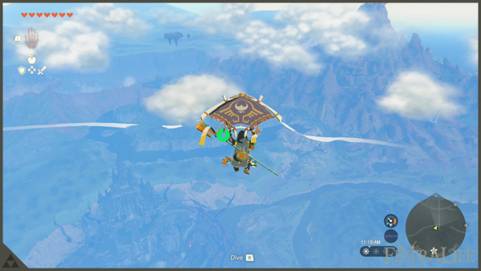
Bạn sẽ đáp xuống vùng ngoại ô Hyrule Castle. Trên đường ra cổng phía Đông, bạn gặp Battle Talus — một con quái bằng đá, dạng tiểu boss. Hãy dọn hết Bokoblin trước rồi mới tập trung vào nó. Cẩn thận vì nó ném đá rất dễ trúng, nhất là khi bạn đứng yên một chỗ. Nên dùng ít nhất 1 Hoa Bom (Bomb Flower) để xử lý mấy con Bokoblin đứng trên lưng nó.
Xem ảnh (1)
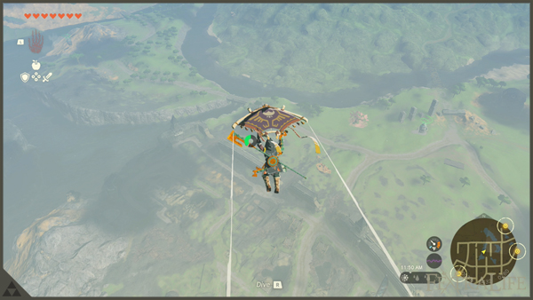
Dọn xong lũ quái phụ, để ý cái cột đá quý nhô ra trên người Talus. Bắn mũi tên vào đó để nó choáng. Tranh thủ lúc nó đứng hình, leo lên chòi gần đó rồi lượn xuống lưng nó. Chém vào viên đá, nó sẽ mất một lượng máu lớn. Khi nó hồi lại thì lặp lại y hệt, trận đánh sẽ sớm kết thúc. Phần thưởng là đá quý các loại: Ruby, Hổ Phách (Amber), Opal. Chiếc rương trong chòi cũng mở khóa, bên trong có thêm 1 Ruby.
Xem ảnh (3)
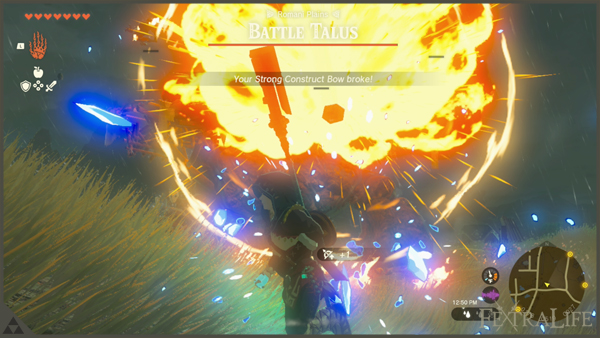
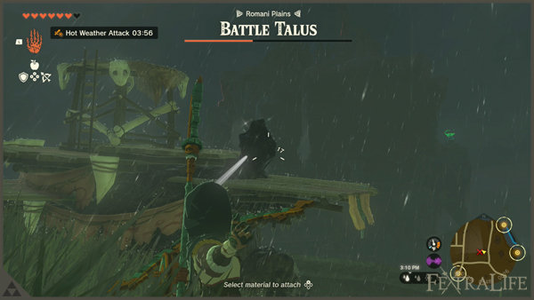
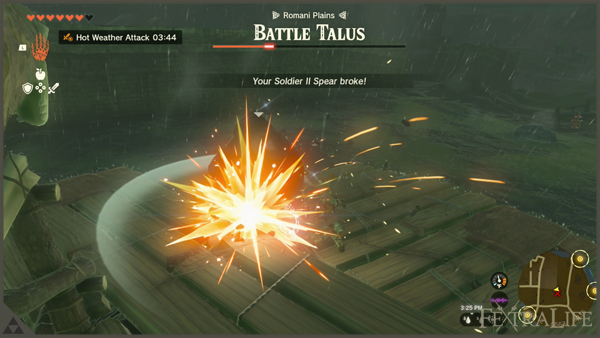
Đi theo con đường phía Bắc, vừa đi vừa nhặt nguyên liệu để dành. Không lâu sau bạn thấy Đền Thờ Nhỏ Sepapa bên bờ sông. Làm luôn đền này trước đã.
Clear Sepapa Shrine (Hoàn thành Đền Thờ Nhỏ Sepapa)
Đền này khá dễ nên làm nhanh thôi. Bạn sẽ dùng Hồi Tưởng, kết hợp với Xuyên là ổn.
Xem ảnh (1)
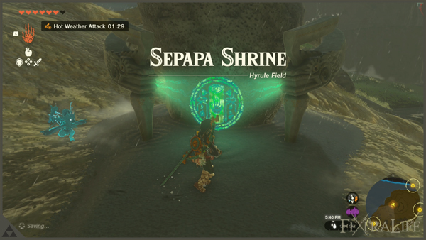
Thử thách 1: đơn giản. Khi bệ di động chạy tới bên trái cây cột nó gắn vào, dùng Hồi Tưởng lên bệ để nó dừng lại một lát, rồi dùng Xuyên để leo lên khu vực phía trên.
Xem ảnh (1)
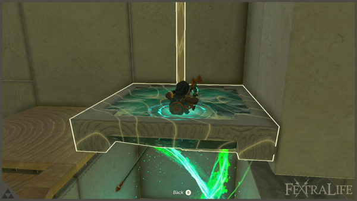
Thử thách 2: để ý sợi dây leo kéo dài tới chiếc rương treo trên tường. Ghép 1 Quả Lửa (Fire Fruit) vào mũi tên rồi bắn để đốt sợi dây. Lấy rương trước, bên trong có 1 Cung Construct Mạnh (Strong Construct Bow). Quay lại cửa chớp, cầm bó đuốc lên. Ngồi lên bè, lại gần các cây cột đá rồi nhanh tay dùng Hồi Tưởng lên bè và cầm đuốc. Nếu đuốc chưa bén lửa, gõ vào cột để nó cháy. Mang đuốc đang cháy tới cửa chớp, thắp sáng cả hai cây cột.
Xem ảnh (1)
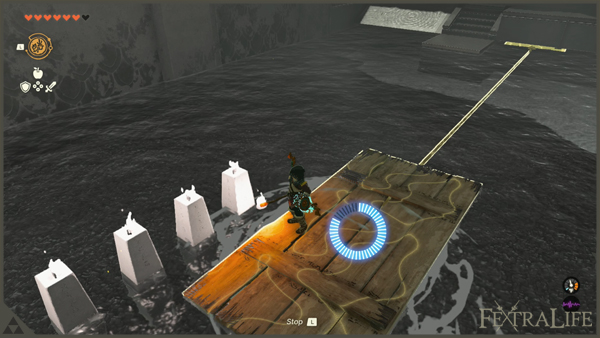
Thử thách 3: đặt quả cầu sắt vào lỗ gần nhất — chỗ bạn vừa nhặt quả cầu. Chờ khoảng hai giây rồi đặt quả cầu sang lỗ kế bên; cửa chớp đầu tiên trên đường ra bệ thờ sẽ mở. Vượt qua cửa thứ nhất, nhắm vào quả cầu và dùng Hồi Tưởng để nó tự trở lại lỗ đầu, mở nốt cửa chớp cuối. Nhận 1 Ánh Sáng Chúc Phúc làm phần thưởng.
Xem ảnh (3)
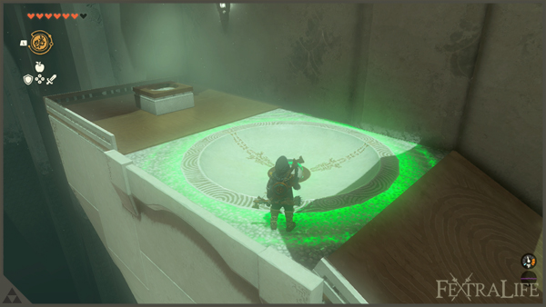
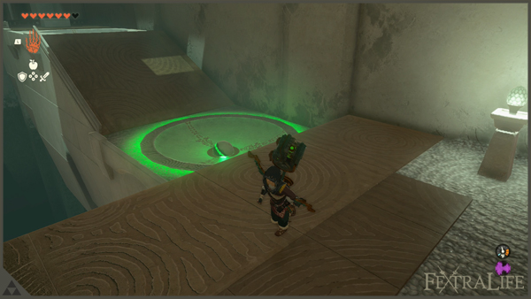
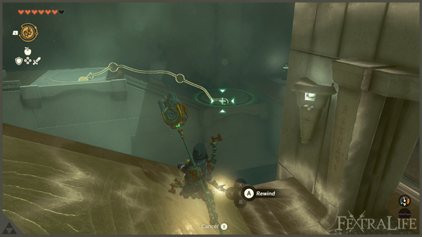
Find Woodland Stable (Tìm Trạm Ngựa Woodland)
Điểm dừng tiếp theo là Trạm Ngựa Woodland. Đi theo đường mòn về phía Bắc, trên đường có nhiều ngựa hoang, bắt một con rồi cưỡi tiếp.
Xem ảnh (1)
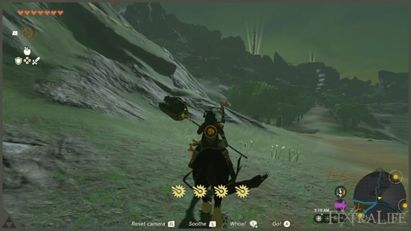
Cuối cùng bạn sẽ thấy Trạm Ngựa Woodland và Tháp Quan Sát Eldin Canyon — mục tiêu tiếp theo sau khi xong đền ở đây. Gặp người quản lý trạm để đăng ký con ngựa vừa bắt và nhận điểm thưởng cho việc tìm ra trạm. Tại đây bạn cũng gặp Penn, Violynne và Mastro, nhận nhiệm vụ phụ Serenade to a Great Fairy: chở cả nhóm nhạc lên đồi bằng xe gỗ, xong việc Đại Tiên sẽ xuất hiện và nâng cấp trang phục cho bạn.
Xem ảnh (1)
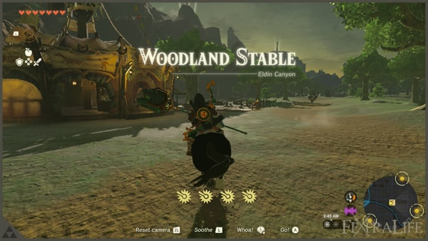
Clear Ekochiu Shrine (Hoàn thành Đền Thờ Nhỏ Ekochiu)
Trạm ngựa nào cũng có một Đền Thờ Nhỏ để dịch chuyển nhanh. Tìm Đền Thờ Nhỏ Ekochiu gần trạm và làm luôn.
Xem ảnh (1)
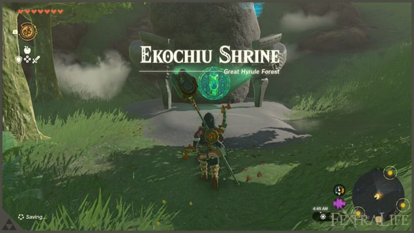
Thử thách 1: giẫm lên công tắc cạnh khối đá. Cơ chế hoạt động, bệ di chuyển sang bệ vuông thứ hai. Khi bệ dời đi, nhảy lên đó, dùng Hồi Tưởng để nó đưa bạn sang bên kia.
Xem ảnh (1)
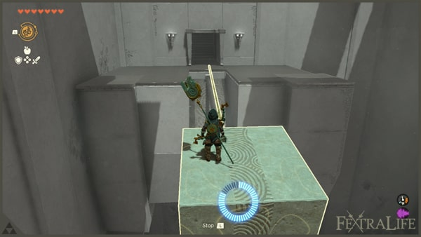
Ekochiu Shrine Puzzle #2 (Đền Thờ Nhỏ Ekochiu – thử thách 2)
Thử thách 2: có một khối kim loại được đẩy xuống từ tầng trên. Nhảy lên khối đó, dùng Hồi Tưởng để nó đưa bạn lên tầng trên. Sau đó lượn qua chỗ đặt rương, lấy 1 Khiên Zonaite (Zonaite Shield). Lặp lại y như vậy để sang thử thách cuối.
Xem ảnh (1)
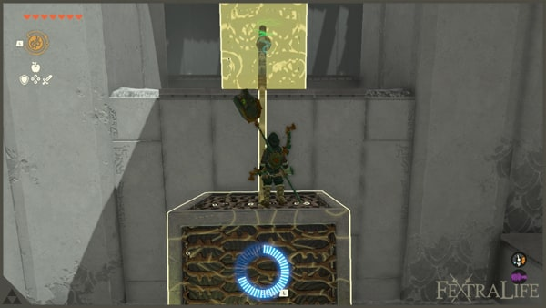
Thử thách 3: đặt khối kim loại lên bệ phóng, giẫm công tắc để nó bắn lên không trung. Khi khối rơi xuống, nhảy lên nó và dùng Hồi Tưởng để nâng mình lên cao. Lượn tới bệ thờ, nhận 1 Ánh Sáng Chúc Phúc.
Xem ảnh (1)
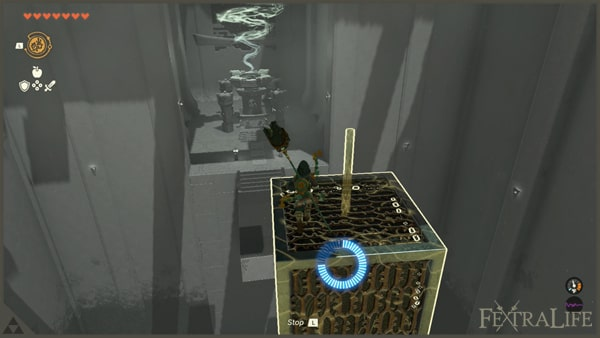
Activate Eldin Canyon Skyview Tower (Kích hoạt Tháp Quan Sát Eldin Canyon)
Xem ảnh (1)
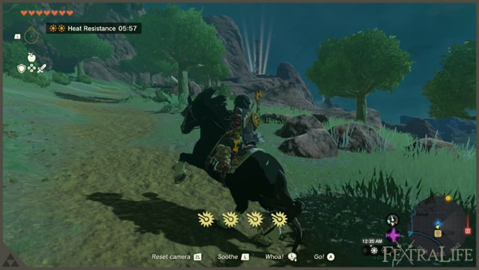
Tháp Quan Sát Eldin Canyon không xa Trạm Ngựa Woodland; lấy ngựa rồi đi theo đường núi dẫn tới tháp. Tháp này sẽ giúp bạn rút ngắn quãng đường bộ tới Thành Goron. Cưỡi ngựa đến khi buộc phải xuống đi bộ leo núi. Tới nơi, bạn thấy tháp đang hỏng và anh Sawson sẽ giải thích. Cách xử lý: trèo lên đỉnh tháp, thả người xuống qua nắp rồi kích hoạt tháp từ bên trong. Cập nhật bản đồ xong thì lượn về phía điểm đánh dấu nhiệm vụ ở hướng Bắc.
Xem ảnh (1)
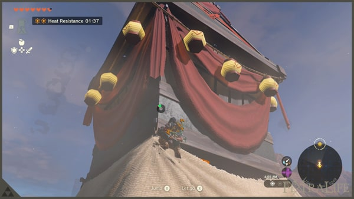
Continue Locating Goron City (Tiếp tục tìm Thành Goron)
Xem ảnh (1)
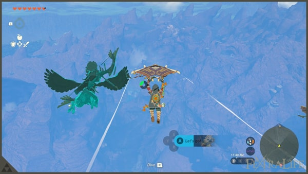
Đi theo điểm đánh dấu, cuối cùng bạn đáp xuống vùng núi đá của Eldin. Từ trên cao đã thấy thành phố với tượng Goro, nhìn từ xa cũng nhận ra. Đi xuyên địa hình đá và tận dụng luồng gió của Tulin khi lượn; trên đường nhớ nhìn xuống tìm hình vẽ mặt đất (Geoglyph), đáp xuống đó để lấy Giọt Lệ Rồng và xem một Ký Ức. Ghé Bedrock Bistro — quán ăn nhỏ ven núi — rồi mới vào Thành Goron. Vào thành phố, nói chuyện với ông Goro già ở giữa thị trấn để xem đoạn phim.
Xem ảnh (1)
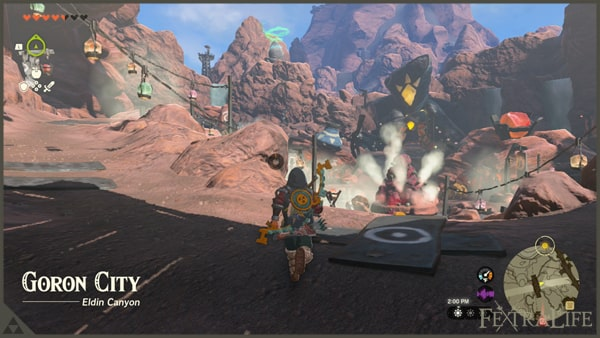
Find YunoboCo's HQ (Tìm trụ sở YunoboCo)
Xem ảnh (1)
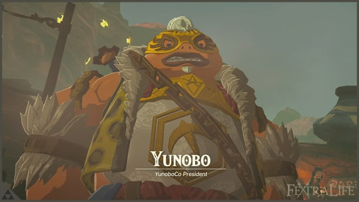
Bạn được giới thiệu một Goro đeo mặt nạ — chính là Yunobo. Trong đoạn phim anh ấy rời đi về trụ sở, và bạn phải tìm YunoboCo HQ. Trước đó, hãy ghé cửa hàng giáp của Thành Goron mua Giáp Chống Lửa (Flamebreaker Armor). Chỉ cần áo là đủ sống sót trong cái nóng khắc nghiệt ở các khu vực sau. Thiếu Rupee thì bán đá quý đi. Vẫn không đủ thì quay lại những hang động đã khám phá, nhất là ở Great Sky Island.
Xem ảnh (1)
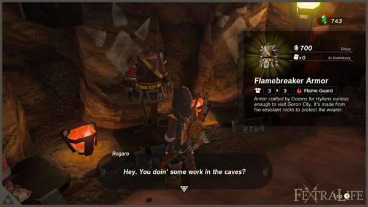
Nếu theo đúng lộ trình này, tới đây bạn đủ tiền mua giáp vì tiền được dồn cho những món cần thiết như giáp. Mua xong thì mặc luôn. Để ý có một Đền Thờ Nhỏ ở khu trên của thành phố, làm trước để mở điểm dịch chuyển nhanh tại đây.
Clear Marakuguc Shrine (Hoàn thành Đền Thờ Nhỏ Marakuguc)
Như thường lệ, đền trong thành phố lớn thường dạy bạn cơ chế của khu vực sắp tới. Ở đây bạn học cách đi lại trên dung nham.
Xem ảnh (1)
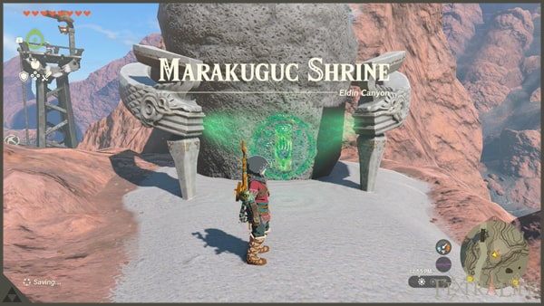
Thử thách 1: nối cây cầu gãy với nửa còn lại để đi qua, đơn giản vậy thôi. Ghép đầu cầu vào bệ kim loại có bánh xe; cầu dài thêm và bạn qua được bên kia.
Xem ảnh (1)
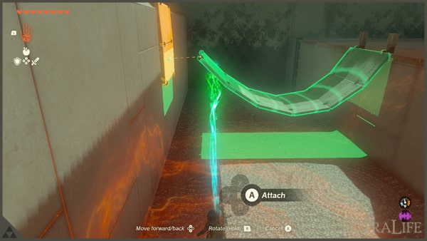
Xem ảnh (1)
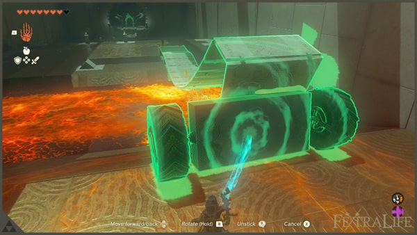
Thử thách 2: tháo bệ có bánh xe khỏi cây cầu cũ. Ghép các bệ khác trong phòng thành xe bốn bánh, rồi gắn thêm bệ lấy từ cây cầu để kéo dài xe. Lái xe qua dung nham, giẫm lên bệ nhô ra khỏi mặt dung nham và dùng Siêu Tay chuyển xe sang bên kia để đi tiếp. Dùng Xuyên để lên tầng trên.
Xem ảnh (1)
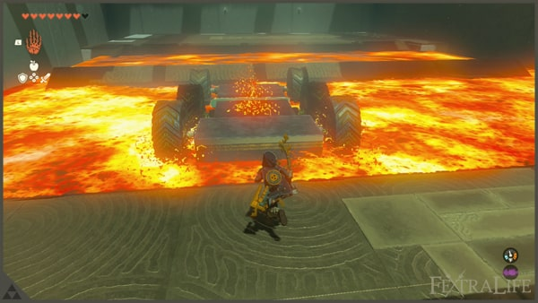
Thử thách 3: thấy mấy quả cầu sắt chứ? Dùng xe đẩy hết chúng sang khu kế bên. Có một chỗ trống cần lấp; bạn cũng có thể tự đẩy quả cầu sắt vào. Khi tổng khối lượng đủ nặng, bệ bị đè xuống và cửa chớp mở ra. Bên kia có một chiếc rương, dùng tấm bệ dài trong phòng để tới. Nhận 1 Ánh Sáng Chúc Phúc.
Xem ảnh (1)
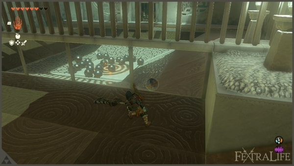
Continue Looking For YunoboCo's HQ (Tiếp tục tìm trụ sở YunoboCo)
Xem ảnh (1)
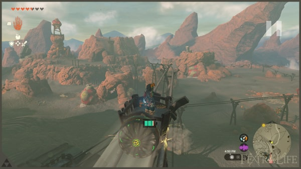
Xong phần khó rồi, cứ đi theo con đường chính dẫn lên khu trên của thành phố. Gần đền có đường ray và xe goòng sẵn. Dùng Siêu Tay lấy một chiếc, gắn 1 Quạt có sẵn quanh đó. Lên xe, chạy thẳng tới YunoboCo HQ. Đi theo điểm đánh dấu, nói chuyện với Offrak và Slergo. Họ cho bạn vào trong gặp Yunobo.
Xem ảnh (1)
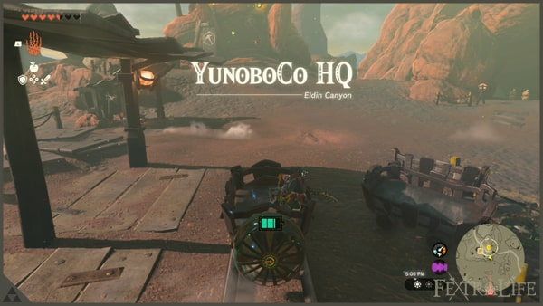
Defeat Yunobo in a Boss Fight (Đánh bại Yunobo)
Xem ảnh (1)
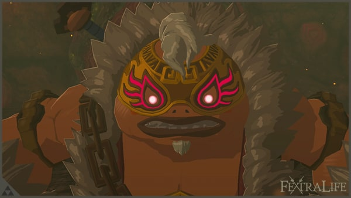
Cơ chế trận đánh rất đơn giản. Khóa mục tiêu Yunobo rồi di chuyển ngang; anh ta sẽ lao tới bằng đòn lăn. Chỉ cần đi ngang là gần như né được đòn đó.
Xem ảnh (3)
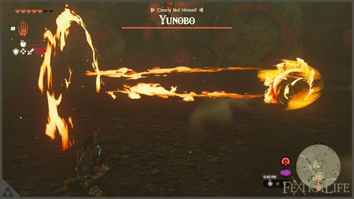
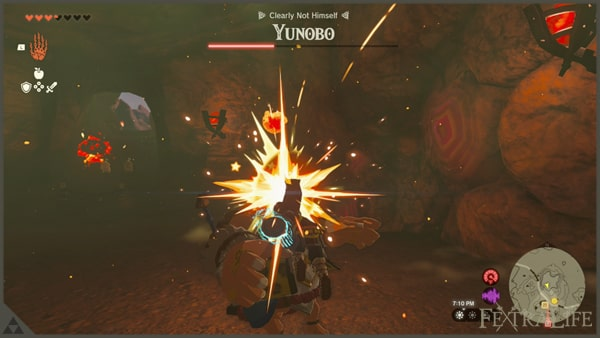
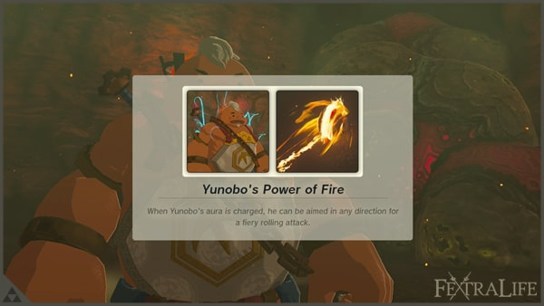
Khi Yunobo đâm vào vách lần thứ ba, anh ta sẽ choáng. Đây là lúc bắn mũi tên vào đầu hoặc chém bằng đòn tích lực. Chờ anh ta lao tới, né, đợi choáng rồi ra đòn, lặp đi lặp lại. Xong trận, Yunobo cho bạn mượn đòn lao của anh ấy; từ giờ bạn phá được các bức tường đá một cách dễ dàng.
Xem ảnh (1)
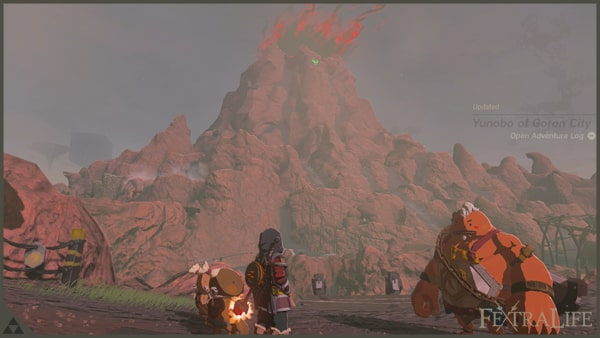
Yunobo tỉnh lại và hỏi bạn về công chúa Zelda. Anh ấy chỉ về phía Death Mountain — đó là điểm đến tiếp theo của bạn.
Head To The Top of Death Mountain (Lên đỉnh Death Mountain)
Mục tiêu duy nhất ở đây là lên tới đỉnh Death Mountain. Đừng lo, núi này không dài như Chuỗi Đảo Rising nên cứ thong thả. Đi theo hướng trong ảnh; đường ray chạy lên phần trên của núi chính là mốc dẫn đường. Gần chỗ bạn đứng có một trại Bokoblin. Vào trại đánh phủ đầu, hoặc ghép 1 Quả Lửa (Fire Fruit) vào mũi tên rồi bắn vào các thùng nổ. Dọn xong thì nhặt hết chiến lợi phẩm.
Xem ảnh (1)
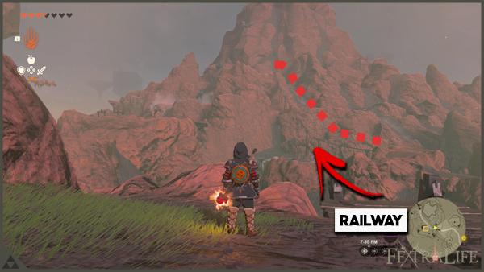
Không xa trại Bokoblin, bạn thấy đá rơi từ một đảo trời phía trên. Tận dụng điều đó: nhảy lên một tảng đá rồi dùng Hồi Tưởng để nó bay ngược lên trời, đưa bạn lên cao. Từ trên cao, lao xuống và lượn dọc theo đường ray đã nhắc. Nếu bám đúng đường ray, bạn sẽ hạ cánh ở Death Mountain West Site. Thấy đường ray dẫn lên phần trên núi chứ?
Xem ảnh (3)
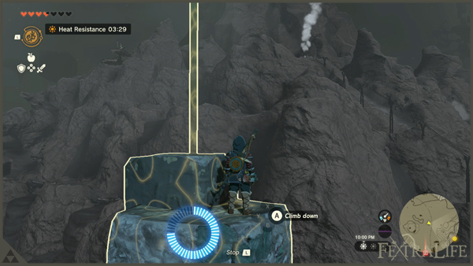
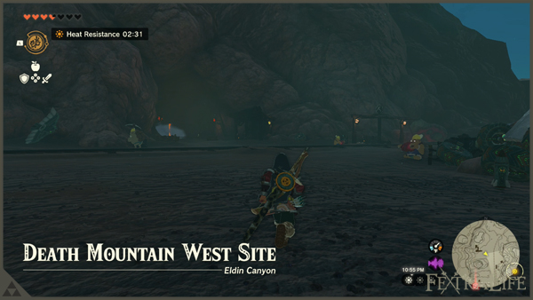
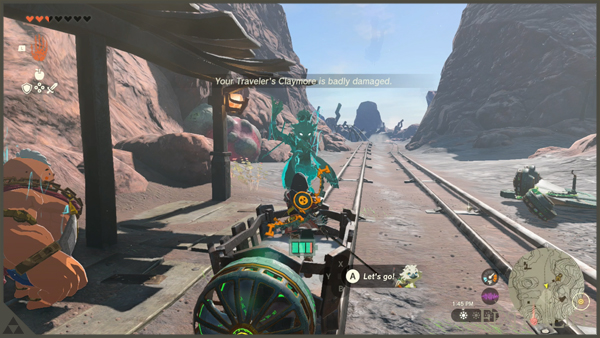
Đây là chỗ bạn đặt xe goòng và gắn 1 Quạt. Yunobo chuẩn bị lao, bạn vừa ngồi xe vừa điều khiển hướng lao. Dùng đòn lao dọn quái trên chòi gần đường ray để chuyến đi suôn sẻ. Cứ thế chạy, chẳng mấy chốc tới đoạn có rào chắn. Xử lý lũ Bokoblin canh gác, rồi dùng Siêu Tay và đòn lao của Yunobo phá khối đá tím chặn đường ray. Đi tiếp bằng xe. Để ý Pin Năng Lượng sắp cạn — dùng Pin Zonai để nạp lại vì bạn có cả đống. Gần đỉnh có một Đền Thờ Nhỏ; làm trước để có điểm dịch chuyển ở khu này.
Xem ảnh (2)
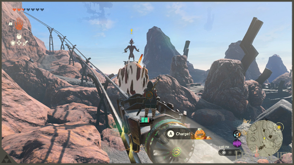
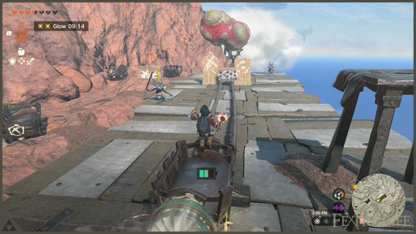
Clear Sitsum Shrine (Hoàn thành Đền Thờ Nhỏ Sitsum)
Đền này khá thú vị vì bạn được lái xe bốn bánh có Cần Lái (Steering Stick). Xe làm từ Thiết Bị Zonai. Bánh Xe Lớn (Big Wheel) khổng lồ, đúng như tên gọi, rất hợp với địa hình khó đi như núi đá hay dung nham. Bạn sẽ dùng chiếc xe này suốt cả đền.
Xem ảnh (1)
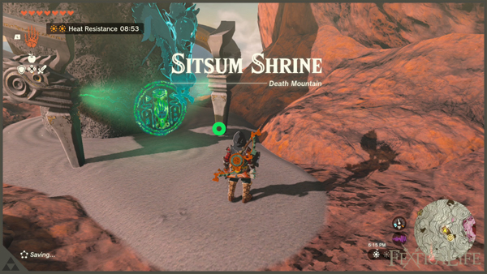
Thử thách 1: lái xe Zonai vượt dung nham để sang khu tiếp theo. Một câu đố đơn giản mà vui. Để ý khoảng sân rộng có chiếc xe khác đỗ bên kia. Về cơ bản, bạn cần đặt quả cầu sắt nhỏ vào lỗ để cửa chớp mở, bên trong là rương chứa 1 Cung Construct Dũng Mãnh (Mighty Construct Bow). Quả cầu nằm trong một ngõ nhỏ, dùng Siêu Tay lấy ra.
Xem ảnh (2)
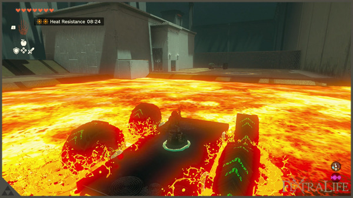
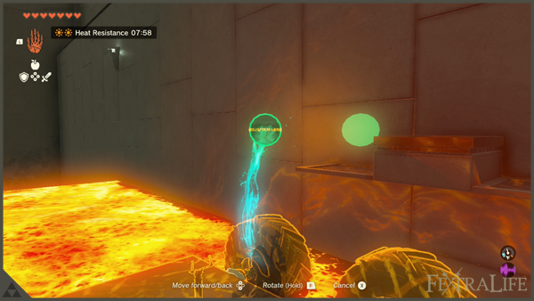
Thử thách 2: tới khu giống đường băng, hạ Soldier Construct II canh gác. Câu đố cũng khá vui. Lấy Cần Lái từ xe bốn bánh gắn lên một chiếc máy bay đã có Quạt. Đẩy cần về trước để cất cánh và bay tới bệ thờ. Cần Lái là một trong những Thiết Bị Zonai hữu dụng nhất: khi điều khiển được mọi thứ, việc khám phá nhàn hẳn, nhất là trong game này. Lấy 1 Ánh Sáng Chúc Phúc làm phần thưởng.
Xem ảnh (1)
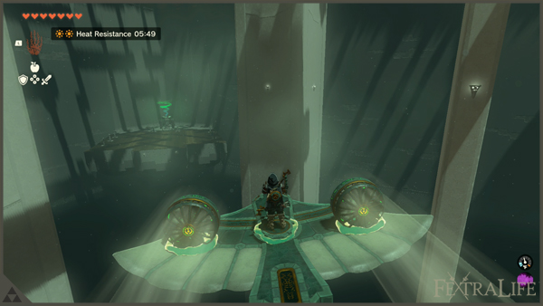
Post Sitsum Shrine (Sau Đền Thờ Nhỏ Sitsum)
Bạn đã lên tới đỉnh, đúng như đã nói là không lâu. Nói chuyện với Yunobo để xem đoạn phim. Tiếp theo là một trận boss, cứ chuẩn bị tinh thần nhưng cũng đừng căng — con này khá dễ hạ.
Xem ảnh (1)
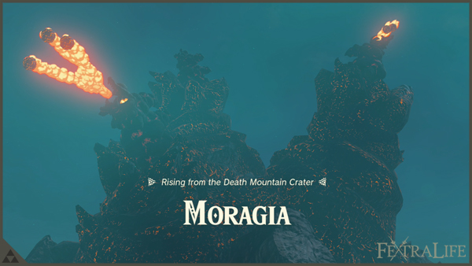
Defeat Moragia in a Boss Battle (Hạ Boss Moragia)
Như đã nói, con boss này dễ xử. Để ý chiếc máy bay lắp sẵn bên phải, chỉnh hướng rồi lên. Nó có đủ thứ bạn cần.
Xem ảnh (1)
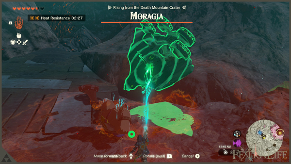
Khi đã ở trên không, nhắm từng cái đầu của Moragia bằng đòn lao của Yunobo. Để ý những quả cầu lửa nó phun ra, bay khá chậm nên né trước được. Mỗi cái đầu trúng đòn sẽ vỡ và mất một khúc máu lớn. Làm y vậy với các đầu còn lại là xong. Chúc mừng bạn đã hạ Moragia.
Xem ảnh (2)
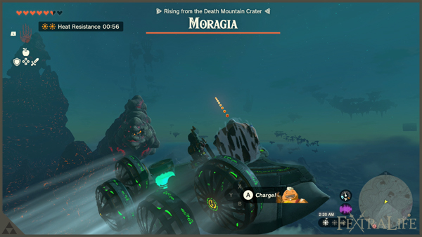
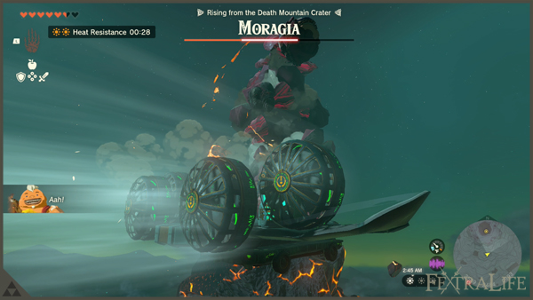
Descend To The Death Mountain Chasm (Xuống Hố Sụt Death Mountain)
Hạ Moragia xong, lối vào Hố Sụt Death Mountain mở ra. Nhảy xuống, bạn sẽ vào khu vực nối liền với Vực Sâu. Nếu theo hướng dẫn này thì bạn đã biết cơ bản về Vực Sâu: dùng Hạt Sáng để soi đường và kích hoạt Rễ Sáng để làm sáng khu vực, đồng thời cập nhật bản đồ. Đáp xuống thì kích hoạt Rễ Sáng Mustis.
Xem ảnh (1)
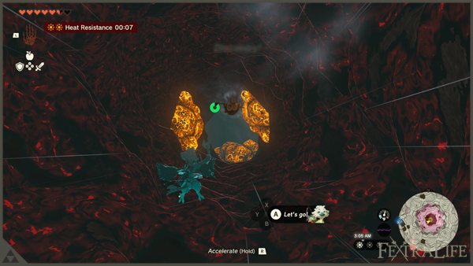
Khu này khá rộng, nhưng bạn chỉ cần lo phần chính. Nói chuyện với Yunobo để đi tiếp; anh ấy sẽ được gọi từ trong Đền Thờ Lửa. Phá các khối đá tím phía trước để vào vùng tối hơn. Cứ xài Hạt Sáng như thường lệ. Một bầy Little Frox đang chờ bên kia, chúng có thể vây từ mọi phía nên cẩn thận, xử lý từng con một. Yunobo và Tulin cũng hỗ trợ bạn. Xong trận, để ý có Máy Phân Phối Thiết Bị Zonai gần đó. Dùng Pin Zonai (bạn đang dư) hoặc Sừng Construct để đổi thêm viên nang Zonai; ở đây có những viên nang đáng giá như Cần Lái, Pin và Bánh Xe Lớn. Lấy dự trữ cho về sau. Đi theo điểm đánh dấu; theo mình, kẻ thù lớn nhất dưới này chính là bóng tối, nên kích hoạt Rễ Sáng sẽ đỡ hẳn. Bản đồ bên dưới là hướng đi chung tới Đền Thờ Lửa.
Xem ảnh (1)
Bạn có thể đi bộ hoặc dùng xe bốn bánh miễn phí trong Vực Sâu. Trên đường để ý những quả cầu linh hồn lơ lửng — đó là Poe; nhặt dọc đường để dành. Ở đây còn nhiều Thiết Bị Zonai miễn phí nếu cần. Khu vực này có một Fire Like canh gác. Vừa soi sáng bằng Hạt Sáng, vừa rẽ ngoặt sang trái và chạy lên dốc. Ngay góc đó là một khu mỏ.
Xem ảnh (1)
Xử lý lũ Bokoblin đào mỏ và tận dụng quặng miễn phí từ các mỏ. Lưu ý quái ở Vực Sâu chịu ảnh hưởng của U Ám — cơ thể chúng phủ một lớp sẫm màu. Đòn của chúng cũng gây U Ám lên bạn, nên đánh cẩn thận với loại quái này.
Xem ảnh (3)
Qua khu mỏ, thêm một dốc đứng cần leo cùng một bức tường đá tím. Dùng đòn lao của Yunobo phá để đi tiếp. Lên hết dốc, bạn thấy Đền Thờ Lửa — khu đó sáng rực, cứ lấy vùng sáng làm mốc. Đường đi còn vài khu mỏ nữa, dọn quái và nhặt quặng. Gần mỏ có đường ray cùng xe goòng và 1 Quạt dùng được cho đoạn ray này.
Xem ảnh (1)
Bạn sẽ vào một đường hầm ngắn làm bằng xương. Quái phục kích ở đây dễ xử bằng đòn lao của Yunobo. Phá nốt khối đá chắn đường. Xe sớm tới cuối đường ray và bạn vào khuôn viên Đền Thờ Lửa. Đi theo lối đá tới cửa đền. Chúc mừng bạn đã tới Đền Thờ Lửa. Phá khối đá ở cửa rồi vào trong.
Xem ảnh (3)
Clear the Fire Temple (Hoàn thành Đền Thờ Lửa)
Xem ảnh (1)
Đền Thờ Lửa là màn lớn nhất của vùng này. Việc chính trong đền là tìm và mở đủ 5 ổ khóa, mỗi ổ nằm ở một khu riêng; mở xong cả 5 thì cửa xuống sàn chính mới mở ra, dẫn vào trận boss.
Hạ xong Marbled Gohma, bạn nhận 1 Bình Máu cùng Lời Thề của Yunobo – Hiền Giả Lửa. Đó là dấu hiệu lòng trung thành của Yunobo với Link.
Xem ảnh (3)
Sau các đoạn phim trong Đền Thờ Lửa, bạn thấy mình đang ở Thành Goron khi mọi thứ đã trở lại bình thường. Vậy là hết phần này, chúc mừng bạn đã hoàn thành. Chặng sau sẽ đi về phía Đông, tới vùng Lanayru.
Return to Lookout Landing (Quay lại Lookout Landing và chuẩn bị sang Lanayru)
Quay về Lookout Landing, lên Tháp Quan Sát và nói chuyện với Purah. Bà cho rằng giữa công chúa Zelda và Đại Biến Động (Upheaval) hẳn có liên hệ, và dặn bạn tiếp tục điều tra các vùng khác.
Sau đó gặp Josha để nhận nhiệm vụ chính A Mystery in the Depths; cô bé đưa 10 Hạt Sáng Lớn (Giant Brightbloom Seed) và 10 Mũi Tên.
Dịch chuyển tới Tháp Quan Sát Eldin Canyon rồi đi về phía Trạm Ngựa South Akkala. Từ đó tới Tháp Quan Sát Ulri Mountain và giúp sửa tháp. Kích hoạt tháp xong, lượn về phía Tháp Quan Sát bạn thấy ở đằng xa: Tháp Quan Sát Upland Zorana — bắt đầu hành trình ở vùng Lanayru.
Mẹo: mặc Giáp Chống Lửa trước khi vào Death Mountain và lòng đất; mang theo Hạt Sáng khi xuống Vực Sâu; dự trữ Pin Zonai vì địa hình Eldin cần chạy xe nhiều; nhớ dùng đòn lao của Yunobo để phá tường đá tím thay vì đập tay.
Vùng Eldin — chi tiết hoàn tất, phủ đủ 25 bước của lộ trình.